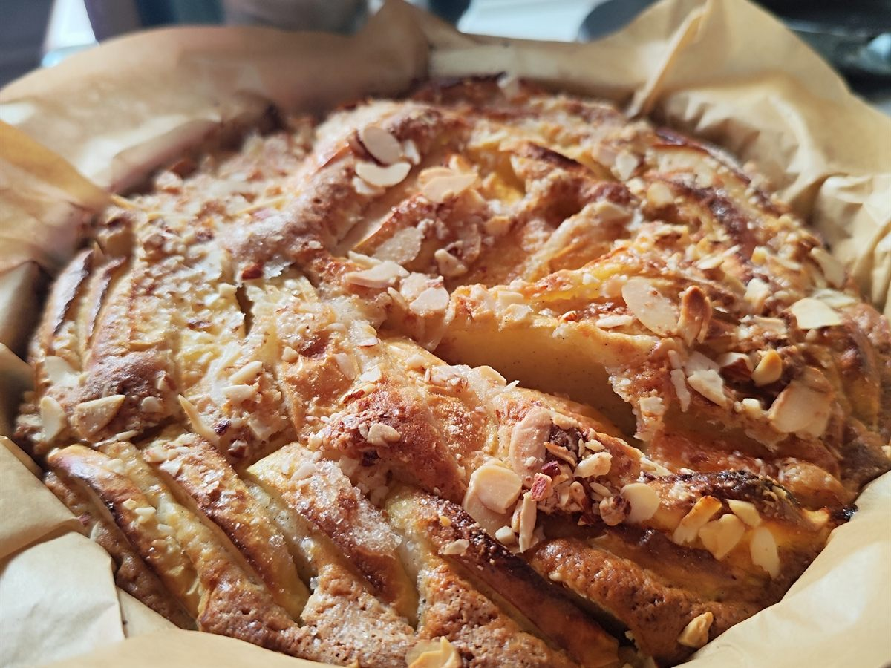

🥧 Деревенский яблочный пирог
Простой домашний пирог с яблоками или грушами. Тесто замешивается на яичных желтках и молоке, а сверху фрукты посыпаются сахаром.

Ингредиенты
| Ингредиент | Количество |
|---|---|
| Яичные желтки | 2 шт. |
| Сахар | 100 г + 3 ст. л. для посыпки |
| Сливочное масло | 50 г (25 г в тесто, 25 г сверху) |
| Молоко | 125 мл |
| Мука | 180 г |
| Разрыхлитель | 4 ч. л. |
| Соль | щепотка |
| Яблоки или груши | 4–5 шт. |
Приготовление
- Соединить желтки и сахар, перемешать до однородности.
- Добавить растопленное остывшее масло (25 г) и молоко. Перемешать.
- В муку добавить разрыхлитель и соль, перемешать и всыпать в яичную смесь.
- Выстелить форму пергаментом и влить тесто.
- Яблоки или груши нарезать дольками и вдавить в тесто. Сверху полить оставшимся маслом (25 г) и посыпать сахаром (3 ст. л.).
- Выпекать при 180 °C до готовности. Проверять зубочисткой: если она сухая, пирог готов.